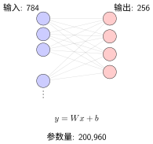
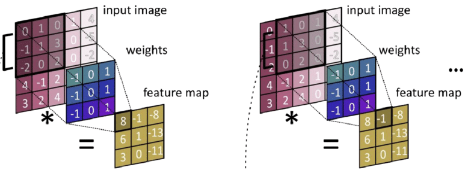

神经网络模块：搭建计算图#
在 全连接神经网络 和 卷积神经网络 中，我们学习了全连接层和卷积层的数学原理：
全连接层：\(y = Wx + b\)，每个输入连接所有输出
卷积层：局部感受野 + 权值共享，检测空间特征
本章将学习如何用 PyTorch 的 nn.Module 把这些数学公式变成可运行的代码。你会发现，每个层类（nn.Linear、nn.Conv2d）都直接对应一个数学运算。
从数学公式到 PyTorch 层#
全连接层：nn.Linear#
回顾 全连接神经网络：
PyTorch 实现：
import torch
import torch.nn as nn
# 输入：784维（如展平后的28×28图像）
# 输出：256维（隐藏层）
fc = nn.Linear(in_features=784, out_features=256)
# 查看参数
print(f"权重形状: {fc.weight.shape}") # torch.Size([256, 784])
print(f"偏置形状: {fc.bias.shape}") # torch.Size([256])
# 前向传播
x = torch.randn(64, 784) # batch=64
y = fc(x) # y = x @ W^T + b
print(f"输出形状: {y.shape}") # torch.Size([64, 256])
参数量计算
全连接层参数量 = 输入维度 × 输出维度 + 输出维度（偏置）
权重：\(784 \times 256 = 200,704\)
偏置：\(256\)
总计：200,960 参数
这与 全连接神经网络 中的计算一致。
全连接层的可视化：

全连接层结构示意图
卷积层：nn.Conv2d#
回顾 卷积神经网络：
PyTorch 实现：
# 输入：3通道图像，输出：32个特征图
# 卷积核：5×5，步长：1，填充：0
conv = nn.Conv2d(
in_channels=3, # 输入通道（RGB）
out_channels=32, # 输出通道（32个卷积核）
kernel_size=5, # 卷积核大小
stride=1, # 步长
padding=0 # 填充
)
# 查看参数
print(f"卷积核形状: {conv.weight.shape}") # torch.Size([32, 3, 5, 5])
print(f"偏置形状: {conv.bias.shape}") # torch.Size([32])
# 前向传播
x = torch.randn(64, 3, 32, 32) # batch=64, 3通道, 32×32图像
y = conv(x) # 卷积运算
print(f"输出形状: {y.shape}") # torch.Size([64, 32, 28, 28])
# (32 - 5 + 0) / 1 + 1 = 28
参数量计算
卷积层参数量 = 输出通道 × 输入通道 × 卷积核高 × 卷积核宽 + 输出通道（偏置）
卷积核：\(32 \times 3 \times 5 \times 5 = 2,400\)
偏置：\(32\)
总计：2,432 参数
对比全连接层（200,960 参数），卷积层参数量少了 82 倍！这就是 归纳偏置（Inductive Bias） 的威力——利用空间局部性减少参数。
卷积层的可视化：
{kind=link}

卷积运算示意图：同一个卷积核（蓝色 3×3 权重矩阵）在输入图像上滑动，每次计算点积得到一个输出值。相同的权重被共享用于检测图像不同位置的特征。#
nn.Module：构建网络的基石#
什么是 nn.Module？#
nn.Module 是 PyTorch 中所有神经网络组件的基类。它提供了：
参数管理（自动注册可学习参数）
前向传播定义（
forward方法）设备转移（
.to('cuda')）
自定义网络类#
模板：
import torch.nn as nn
class MyNetwork(nn.Module):
def __init__(self):
super(MyNetwork, self).__init__()
# 1. 定义层（在__init__中创建）
self.fc1 = nn.Linear(784, 256)
self.relu = nn.ReLU()
self.dropout = nn.Dropout(0.2)
self.fc2 = nn.Linear(256, 10)
def forward(self, x):
# 2. 定义前向传播（数据如何流动）
x = self.fc1(x) # 线性变换
x = self.relu(x) # 激活函数（见{ref}`activation-functions`）
x = self.dropout(x) # 正则化（见{doc}`neural-training-basics`）
x = self.fc2(x) # 输出层
return x
# 创建实例
model = MyNetwork()
print(model)
完整示例：实现 LeNet-5#
让我们用 PyTorch 实现 LeNet-5架构详解 中的经典架构：
class LeNet5(nn.Module):
"""
LeNet-5 的 PyTorch 实现
对应 {doc}`../neural-network-basics/le-net` 中的架构分析
"""
def __init__(self, num_classes=10):
super(LeNet5, self).__init__()
# C1: 卷积层，1→6通道，5×5卷积核，输出28×28
# 参数量: 6×1×5×5 + 6 = 156
self.c1 = nn.Conv2d(1, 6, kernel_size=5, padding=2)
# S2: 2×2平均池化，输出14×14
self.s2 = nn.AvgPool2d(kernel_size=2, stride=2)
# C3: 卷积层，6→16通道，5×5卷积核，输出10×10
# 参数量: 16×6×5×5 + 16 = 2,416
self.c3 = nn.Conv2d(6, 16, kernel_size=5)
# S4: 2×2平均池化，输出5×5
self.s4 = nn.AvgPool2d(kernel_size=2, stride=2)
# C5: 卷积层（实为全连接），16→120，输出1×1
# 参数量: 120×16×5×5 + 120 = 48,120
self.c5 = nn.Conv2d(16, 120, kernel_size=5)
# F6: 全连接层，120→84
# 参数量: 120×84 + 84 = 10,164
self.f6 = nn.Linear(120, 84)
# 输出层，84→10（类别数）
# 参数量: 84×10 + 10 = 850
self.output = nn.Linear(84, num_classes)
def forward(self, x):
# C1: [batch, 1, 28, 28] → [batch, 6, 28, 28]
x = torch.tanh(self.c1(x))
# S2: [batch, 6, 28, 28] → [batch, 6, 14, 14]
x = self.s2(x)
# C3: [batch, 6, 14, 14] → [batch, 16, 10, 10]
x = torch.tanh(self.c3(x))
# S4: [batch, 16, 10, 10] → [batch, 16, 5, 5]
x = self.s4(x)
# C5: [batch, 16, 5, 5] → [batch, 120, 1, 1]
x = torch.tanh(self.c5(x))
# 展平: [batch, 120, 1, 1] → [batch, 120]
x = x.view(x.size(0), -1)
# F6: [batch, 120] → [batch, 84]
x = torch.tanh(self.f6(x))
# 输出: [batch, 84] → [batch, 10]
x = self.output(x)
return x
# 验证参数量
model = LeNet5()
total_params = sum(p.numel() for p in model.parameters())
print(f"总参数量: {total_params:,}") # 61,706（与论文一致！）
维度追踪技巧
写 forward 时，建议在每个操作后注释输出形状：
def forward(self, x):
x = self.conv1(x) # [64, 3, 32, 32] → [64, 32, 28, 28]
x = self.pool(x) # [64, 32, 28, 28] → [64, 32, 14, 14]
x = self.conv2(x) # [64, 32, 14, 14] → [64, 64, 10, 10]
# ...
这样出错时可以快速定位维度不匹配的位置。
容器：组织多个层#
nn.Sequential：顺序执行#
当层按顺序连接时，用 nn.Sequential 简化代码：
# 方式1：逐个添加
model = nn.Sequential(
nn.Linear(784, 256),
nn.ReLU(),
nn.Dropout(0.2),
nn.Linear(256, 10)
)
# 方式2：带名称（便于访问）
from collections import OrderedDict
model = nn.Sequential(OrderedDict([
('fc1', nn.Linear(784, 256)),
('relu1', nn.ReLU()),
('dropout', nn.Dropout(0.2)),
('fc2', nn.Linear(256, 10))
]))
# 访问特定层
print(model.fc1) # 或 model[0]
nn.ModuleList：动态层数#
当层数不固定（如根据配置决定深度）时使用：
class DynamicNet(nn.Module):
def __init__(self, layer_sizes):
super(DynamicNet, self).__init__()
self.layers = nn.ModuleList()
for i in range(len(layer_sizes) - 1):
self.layers.append(nn.Linear(layer_sizes[i], layer_sizes[i+1]))
if i < len(layer_sizes) - 2: # 最后一层不加激活
self.layers.append(nn.ReLU())
def forward(self, x):
for layer in self.layers:
x = layer(x)
return x
# 使用
model = DynamicNet([784, 256, 128, 64, 10])
参数管理#
查看和访问参数#
model = LeNet5()
# 查看所有参数
for name, param in model.named_parameters():
print(f"{name}: {param.shape} ({param.numel()} 参数)")
# 输出示例：
# c1.weight: torch.Size([6, 1, 5, 5]) (150 参数)
# c1.bias: torch.Size([6]) (6 参数)
# c3.weight: torch.Size([16, 6, 5, 5]) (2400 参数)
# ...
# 只查看可训练参数
trainable_params = sum(p.numel() for p in model.parameters() if p.requires_grad)
print(f"可训练参数量: {trainable_params:,}")
参数初始化#
良好的初始化对训练很重要:
def initialize_weights(m):
"""自定义初始化"""
if isinstance(m, nn.Linear):
# Xavier 初始化（适合 tanh/sigmoid）
nn.init.xavier_uniform_(m.weight)
nn.init.zeros_(m.bias)
elif isinstance(m, nn.Conv2d):
# He 初始化（适合 ReLU）
nn.init.kaiming_normal_(m.weight, mode='fan_out', nonlinearity='relu')
nn.init.zeros_(m.bias)
# 应用到整个模型
model.apply(initialize_weights)
冻结参数#
迁移学习中，常常需要冻结预训练层的参数：
# 冻结卷积层，只训练全连接层
for param in model.c1.parameters():
param.requires_grad = False
for param in model.c3.parameters():
param.requires_grad = False
# 验证
for name, param in model.named_parameters():
print(f"{name}: requires_grad={param.requires_grad}")
常见层详解#
激活函数层#
# ReLU（最常用）
relu = nn.ReLU() # max(0, x)
# Sigmoid（二分类输出）
sigmoid = nn.Sigmoid() # 1 / (1 + exp(-x))
# Tanh（早期网络）
tanh = nn.Tanh()
# Softmax（多分类输出）
softmax = nn.Softmax(dim=1) # 沿类别维度
归一化层#
# BatchNorm（最常用）
bn = nn.BatchNorm2d(num_features=64) # 对64个通道分别归一化
# LayerNorm（适合序列数据）
ln = nn.LayerNorm(normalized_shape=[64, 28, 28])
正则化层#
# Dropout（防止过拟合）
dropout = nn.Dropout(p=0.5) # 50%概率丢弃
# 注意：训练时生效，推理时自动关闭（model.eval()）
下一步#
现在你已经学会了如何搭建网络架构。接下来：
自动微分：PyTorch 的核心魔法：理解
.backward()如何自动计算梯度（对应 反向传播算法）优化器：用梯度更新参数：用优化器更新参数（对应 梯度下降与优化算法）
核心认知：nn.Module 的本质是封装了参数的数学运算——每个层类都实现了特定的前向传播公式，并自动处理反向传播的梯度计算。
贡献者与修订历史
查看详细修订记录
-
6bf95762026-04-28 - Heyan Zhu: docs: remove reference link in neural network module doc -
b20ef3e2026-04-28 - Heyan Zhu: docs: update pytorch practice section with detailed explanations and code examples -
0c291d72025-12-10 - Heyan Zhu: docs: restructure course materials and add new content